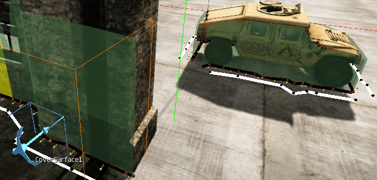
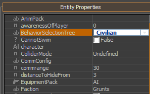
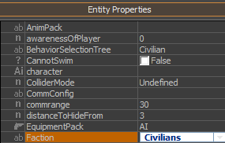

Некоторые части этой статьи, относящиеся к деревьям выбора поведения и сценариям поведения старого стиля, предназначены для CRYENGINE 3.4 или более ранних версий. Дерево выбора поведения и сценарии поведения старого стиля были заменены модульным деревом поведения в CRYENGINE 3.5 и более поздних версиях.
Обзор
Динамические обложки, создаваемые в автономном режиме и корректируемые во время выполнения.
Пример: CoverSurface и HMMWV.

(Здесь ai_DebugDraw=1, ai_DebugDrawCover=2и [AI/Физика] включен.)
Динамические тактические точки
Пример: очень застенчивый гражданский, который всегда хочет спрятаться от игрока.
TPS запрос:
AI.RegisterTacticalPointQuery({ Name = "Civilian_HideFromEnemy", { Generation = { cover_from_attentionTarget_around_puppet = 25 }, Conditions = { reachable = true, }, Weights = { distance_from_puppet = -1, }, }, });
Запрос TPS, указанный в воротах:
<GoalPipes> <GoalPipe name="Civilian_HideFromEnemy"> <TacticalPos name="Civilian_HideFromEnemy"/> </GoalPipe> </GoalPipes>
В поведении выбрана голпайп:
local Behavior = CreateAIBehavior("CivilianIdle", { Alertness = 0, OnEnemySeen = function(self, entity, distance) entity:SelectPipe(0, "Civilian_HideFromEnemy"); end, OnTPSDestReached = function(self, entity) entity:SelectPipe(0, "_first_"); end, })
- Свойства Гранта:

- Полезный отладочный рисунок AI:
- ai_DebugTacticalPoints=1
- ai_StatsTarget=Грант1
- ai_TacticalPointsDebugTime=10
Для большего реализма добавьте следующее перед голопом TacticalPos:
<Speed id="Sprint"/>
Деревья поведения
Пример: гражданский, который прячется от стреляющего игрока.
Новое гражданское поведение:
<?xml version="1.0" encoding="utf-8"?> <SelectionTrees> <SelectionTree name="Civilian" type="BehaviorSelectionTree"> <Variables> <Variable name="alerted"/> </Variables> <SignalVariables> <Signal name="OnNoTarget" variable="alerted" value="false"/> </SignalVariables> <LeafTranslations> <Map node="Alerted" target="CivilianAlerted"/> <Map node="Idle" target="CivilianIdle"/> </LeafTranslations> <Priority name="Root"> <Leaf name="Alerted" condition="alerted"/> <Leaf name="Idle"/> </Priority> </SelectionTree> </SelectionTrees>
Поведение в режиме ожидания:
local Behavior = CreateAIBehavior("CivilianIdle", { Alertness = 0, OnBulletRain = function(self, entity, sender, data) entity.AI.hostileId = data.id; AI.AddPersonallyHostile(entity.id, entity.AI.hostileId); AI.SetBehaviorVariable(entity.id, "alerted", true); end, OnTPSDestReached = function(self, entity) entity:SelectPipe(0, "_first_"); end, });
Предупреждаемое поведение:
local Behavior = CreateAIBehavior("CivilianAlerted", "CivilianIdle", { Alertness = 2, Constructor = function(self, entity) entity:SelectPipe(0, "Civilian_HideFromEnemy"); end, Destructor = function(self, entity) AI.RemovePersonallyHostile(entity.id, entity.AI.hostileId); end, });
- Свойства гражданского лица:

- Полезный отладочный рисунок AI:
- ai_DebugTargetTracksAgent=Грант1
- Посмотрите просмотры:
- AI Отладчик
- Редактор дерева выбора поведения